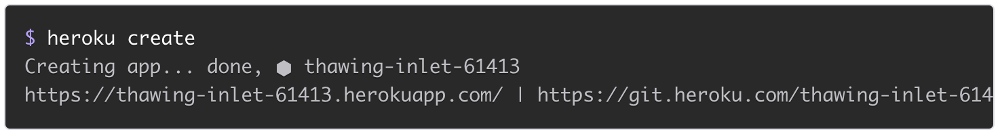
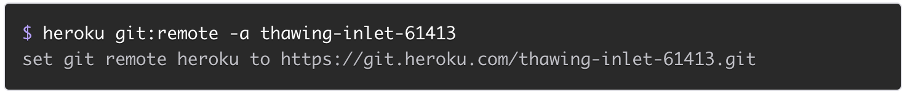
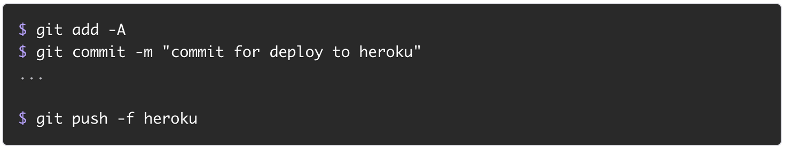

This guide is a work in progress, if you have any feedback or suggestions, tweet me @richgibbons91
GitHub is a web-based hosting service for version control using git. It is mostly used for computer code.
It offers all of the distributed version control and source code management functionality of Git as well as adding its own features.
Git cheat sheet This cheat sheet summarizes commonly used Git command line instructions for quick reference
3. Install the gov prototyping kit
4a. Add an existing project to github
Creating a Heroku remote
Git remotes are versions of your repository that live on other servers.
You deploy your app’s code by pushing it to a special Heroku-hosted remote that’s associated with your app.
For a new heroku app
For an existing app
Renaming remotes Deploying code